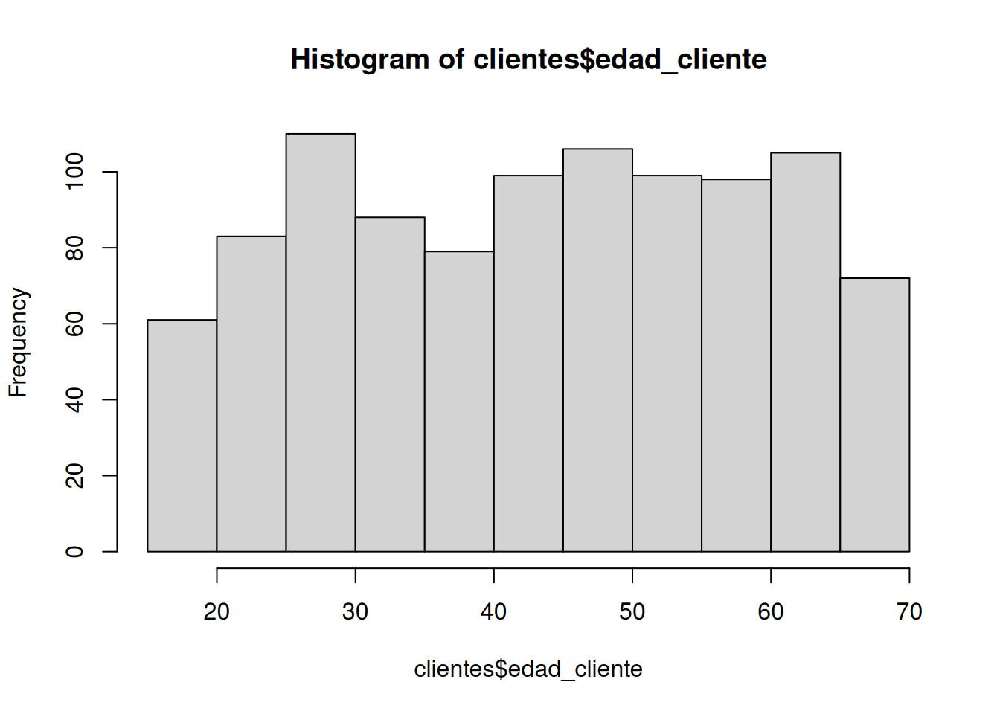

Unidad 1.1
dgonzalez
1. Introducción
Al tener una base de datos se requiere resumirlos en una tabla o en indicadores que faciliten su análisis, dependiendo el tipo de variable ( cualitativas o cuantitativas) la tabla puede tener diferentes columnas.
En el caso de los indicadores las variables cualitativas se les resumen en el nivel con mayor frecuencias a la que se le llama MODA
Las variables cuantitativas tiene un gran número de indicadores que se dividien en tres categorias:
- Indicadores de tendencia central
- Indicadores de dispersión
- Indicadores de forma
A continuación se indica como realizar el proceso utilizando RStudio, bajo el supuesto que se cuenta con una base de datos que se ha importado en RStudio.


Instalación de summarytools
Uno de los paquetes de R utilizados para la construcción de tablas de frecuencia e indicadores descriptivos es summarytools, a continuación se comparte código para su instalación :
install.packages("remotes") # se puede también utilizar el paquete devtools
library(remotes)
install_github("rapporter/pander") # repositorio recomendado
install_github("dcomtois/summarytools", build_vignettes = TRUE)
# install.packages("remotes") # se puede también utilizar el paquete devtools
# library(remotes)
# install_github("rapporter/pander") # repositorio recomendado
# install_github("dcomtois/summarytools", build_vignettes = TRUE)2. Tablas de frecuencia
Resumir los datos en tablas facilita su análisis y también su representación gráfica. Varios gráficos están basados en tablas de frecuencia como veremos en la unidad 1.3
Tablas variables cualitativas
Iniciaremos con la construcción de tablas para variables cualitativas en escala nominal. Recordemos que las variables medidas en esta escala no presentan orden especial y en algunos casos son ordenadas de mayor a menor frecuencia
Utilizaremos en este caso la función table()
table(clientes$categoria_preferida)
Alimentos Deportes Electrónica Hogar Ropa
199 210 215 206 170 #install.packages("AER")
library(AER)
data("BankWages")
table(BankWages$job)
custodial admin manage
27 363 84 library(readxl)
ventas <- read_excel("data/ventas.xlsx")
table(ventas$Metodo_Pago)
American Express Discover MasterCard Star Card
4 8 28 140
Visa
20 En todos los casos podemos elaborar una tabla acompañada con los porcentajes (frecuencia relativa)
Paquete flextable
install.packages("flextable")
library(flextable)ft1=table(ventas$Metodo_Pago)%>%
as.data.frame()
colnames(ft1)=c("Tipo de tarjeta", "Frecuencia Absoluta")
ft1=flextable(ft1)
set_flextable_defaults(
font.size = 10, font.family = "Helvetica",
font.color = "#333333",
table.layout = "fixed",
border.color = "gray",
padding.top = 3, padding.bottom = 3,
padding.left = 4, padding.right = 4)
ft1 <- ft1 %>%
width(j = 1, width = 2) %>%
width(j = 2, width = 1)
ft1Tipo de tarjeta | Frecuencia Absoluta |
|---|---|
American Express | 4 |
Discover | 8 |
MasterCard | 28 |
Star Card | 140 |
Visa | 20 |
El resultado corresponde a un conteo de cada uno de los valores de la
variable. En caso de que se requiera calcular la proporción que
corresponde cada caso utilizamos la función : prop.table()
y se la aplicamos a la tabla anterior
ft2=table(ventas$Metodo_Pago)%>%
prop.table() %>%
as.data.frame()
colnames(ft2)=c("Tipo de tarjeta", "Frecuencia relativa")
ft2=flextable(ft2)
set_flextable_defaults(
font.size = 10, font.family = "Helvetica",
font.color = "#333333",
table.layout = "fixed",
border.color = "gray",
padding.top = 3, padding.bottom = 3,
padding.left = 4, padding.right = 4)
ft2 <- ft2 %>%
width(j = 1, width = 2) %>%
width(j = 2, width = 1)
ft2Tipo de tarjeta | Frecuencia relativa |
|---|---|
American Express | 0.02 |
Discover | 0.04 |
MasterCard | 0.14 |
Star Card | 0.70 |
Visa | 0.10 |
Si utilizamos la función freq del paquete
summarytools, la salida es una tabla más elaborada
summarytools::freq(ventas$Metodo_Pago, cumul = F)Error in `match.call()`:
! ... used in a situation where it does not existFrequencies
Freq % Valid % Total
---------------------- ------ --------- ---------
American Express 4 2.00 2.00
Discover 8 4.00 4.00
MasterCard 28 14.00 14.00
Star Card 140 70.00 70.00
Visa 20 10.00 10.00
<NA> 0 0.00
Total 200 100.00 100.00Tablas variables cuantitativas
Para el caso de las variables cuantitativas que presentan muchos valores difentes construir una tabla como las anteriores no tiene sentido, pues salen muchas categorias probablemente con frecuencia uno.
En este caso es necesario construir rangos que den sentido y que permitan resumir la información para una facil interpretación.
El ejemplo a continuación da cuenta de ello.
Supongamos que queremos analizar la variable edad y para ello debemos establecer los limites y cuantos intervalo vamos aconstruir. En este caso tenemos tres alternativas posible_
- Tomar los intervalos construidos en un estudio anterior con cual queremos comparar los nuestros
- Tomar intervalos de acuerdo a estudios anteriores o teorías sobre el tema
- Tomar intervalos de igual longitud. En este caso existen diferentes alternativas para establecer el número de intervalos a construir. Uno de ellos indica como respuesta a este interrogante la fórmula construida por Sturgues (se puede conocer mediante la función nclass.Sturges(variable)) que es utilizada por otras funciones en R
En el caso de la variable Edad podríamos proceder así:
clientes$edadR[clientes$edad_cliente<=20]<-"1. (18 a 20 años]"
clientes$edadR[clientes$edad_cliente>20.1 & clientes$edad_cliente<=30]<-"2. (20 a 39 años]"
clientes$edadR[clientes$edad_cliente>30.1 & clientes$edad_cliente<=40]<-"3. (30 a 40 años]"
clientes$edadR[clientes$edad_cliente>40.1 & clientes$edad_cliente<=50]<-"4. (40 a 50 años]"
clientes$edadR[clientes$edad_cliente>50.1 & clientes$edad_cliente<=60]<-"5. (50 a 60 años]"
clientes$edadR[clientes$edad_cliente>60.1]<-"6. (Más de 60 años]"
summarytools::freq(clientes$edadR)Error in `match.call()`:
! ... used in a situation where it does not existFrequencies
Freq % Valid % Valid Cum. % Total % Total Cum.
------------------------- ------ --------- -------------- --------- --------------
1. (18 a 20 años] 61 6.10 6.10 6.10 6.10
2. (20 a 39 años] 193 19.30 25.40 19.30 25.40
3. (30 a 40 años] 167 16.70 42.10 16.70 42.10
4. (40 a 50 años] 205 20.50 62.60 20.50 62.60
5. (50 a 60 años] 197 19.70 82.30 19.70 82.30
6. (Más de 60 años] 177 17.70 100.00 17.70 100.00
<NA> 0 0.00 100.00
Total 1000 100.00 100.00 100.00 100.00Esta tabla nos permite identificar los rangos de mayor frecuencia
También podemos realizar una tabla sin tener que realizar la recodificación. Esto se logra con la función hist()
h=hist(clientes$edad_cliente)
h$breaks # puntos de corte [1] 15 20 25 30 35 40 45 50 55 60 65 70h$counts # frecuencias absolutas en cada intervalo [1] 61 83 110 88 79 99 106 99 98 105 72h$density # densidad en cada intervalo [1] 0.0122 0.0166 0.0220 0.0176 0.0158 0.0198 0.0212 0.0198 0.0196 0.0210
[11] 0.0144Sería de interés también construir una tabla con las edades de las personas fallecidas por covid en Colombia, para lo cual debemos primero seleccionar la base de datos de las fallecidas y luego construir la tabla.
En este caso vamos a seleccionar los rangos de edad y luego construimos la tabla
clientes_jovenes=subset(clientes, edad_cliente<30)
breaks=seq(17,30, by=4)
Edad.jovenes=cut(clientes_jovenes$edad_cliente, breaks)
summarytools::freq(Edad.jovenes)Error in `match.call()`:
! ... used in a situation where it does not existFrequencies
Freq % Valid % Valid Cum. % Total % Total Cum.
------------- ------ --------- -------------- --------- --------------
(17,21] 75 33.48 33.48 33.48 33.48
(21,25] 69 30.80 64.29 30.80 64.29
(25,29] 80 35.71 100.00 35.71 100.00
<NA> 0 0.00 100.00
Total 224 100.00 100.00 100.00 100.00Tablas de doble entrada
#CAMBIAR DATA----------------------------------------
table(clientes$genero_cliente, clientes$categoria_preferida)
Alimentos Deportes Electrónica Hogar Ropa
Femenino 79 77 78 79 68
Masculino 105 118 108 108 89
Otro 15 15 29 19 13tabla1=table(clientes$edadR,clientes$categoria_preferida ) %>%
prop.table()*100
tabla1
Alimentos Deportes Electrónica Hogar Ropa
1. (18 a 20 años] 1.3 1.0 1.3 1.2 1.3
2. (20 a 39 años] 3.6 4.0 4.6 4.0 3.1
3. (30 a 40 años] 3.7 4.3 3.5 3.2 2.0
4. (40 a 50 años] 4.0 3.4 4.4 5.1 3.6
5. (50 a 60 años] 4.2 4.0 4.2 3.9 3.4
6. (Más de 60 años] 3.1 4.3 3.5 3.2 3.63. Indicadores descriptivos
Un indicador es un número que resume o representa un grupo de valores. El poder resumir una gran cantidad de valores en unos pocos facilita realizar un análisis de ellos.
En el caso de las variables cualitativas en escala nominal, se pueden representar por el valor más frecuente. A este valor se le conoce como Moda y lo podemos ver claramente en una tabla de frecuencias.
En el caso de las variables cuantitativas tenemos varias alternativas para construirlos
Utilizando la función summary :
#CAMBIAR DATA----------------------------------------
summary(clientes$ingresos) Min. 1st Qu. Median Mean 3rd Qu. Max.
30004 57912 87846 88501 116110 149973 Utilizando la función describe del paquete psych:
#CAMBIAR DATA----------------------------------------
psych::describe(clientes$ingresos) vars n mean sd median trimmed mad min max range
X1 1 1000 88500.8 34230.77 87845.5 88174.88 43366.79 30004 149973 119969
skew kurtosis se
X1 0.05 -1.17 1082.47Utilizando la función describe.by del paquete
psych, que nos permite el calculo de las descritivas para
varios grupos :
psych::describe.by(clientes$ingresos, group = clientes$genero_cliente)
Descriptive statistics by group
group: Femenino
vars n mean sd median trimmed mad min max range skew
X1 1 381 87409.22 32837.12 85473 86763.79 41167.35 30058 149744 119686 0.12
kurtosis se
X1 -1.11 1682.3
------------------------------------------------------------
group: Masculino
vars n mean sd median trimmed mad min max range skew
X1 1 528 89375.11 35217.74 89124.5 89264.03 44840.5 30004 149973 119969 0.02
kurtosis se
X1 -1.2 1532.66
------------------------------------------------------------
group: Otro
vars n mean sd median trimmed mad min max range skew
X1 1 91 87998.13 34369.87 92089 88227.18 44833.82 30523 148368 117845 -0.07
kurtosis se
X1 -1.3 3602.94Utilizando la función descr del paquete
summaytools :
summarytools::descr(clientes$ingresos)Error in `match.call()`:
! ... used in a situation where it does not existDescriptive Statistics
clientes$ingresos
----------------- -------------------
Mean 88500.80
Std.Dev 34230.77
Min 30004.00
Q1 57891.50
Median 87845.50
Q3 116114.50
Max 149973.00
MAD 43366.79
IQR 58198.50
CV 0.39
Skewness 0.05
SE.Skewness 0.08
Kurtosis -1.17
N.Valid 1000.00
N 1000.00
Pct.Valid 100.00YA ESTAMOS LISTOS PARA INTERPRETAR LA INFORMACIÓN !!
4. Documentos pdf con Rmd
A través de RStudio se pueden construir documentos en formatos PDF, DOC, HTML entre otros. En esta ocasión se describe como realizar un informe utilizando para ello un archivo Rmd en RStudio.
Inicialmente en RStudio abrimos un nuevo archivo en formato Rmd
File/New File/ R Markdown…
Al hacerlo se despliega la siguiente ventana

En este caso seleccionamos PDF para abrir una plantilla que nos ofrece el programa para orientar nuestros primeros pasos
---
title: "Untitled"
author: "dgonzalez"
date: "3/2/2022"
output: pdf_document
---El primer bloque contiene información sobre el titulo del documento, el autor, la fecha y el formato de salida
Podemos también agregar un subtítulo: subtitle: “Subtítulo”
Despues de este bloque encontramos el cuerpo del documento que puede contener texto escrito de manera normal, código html, código Markdown y LaTeX
Algunas de las principales instrucciones para empezar son
Titulos
# Título 1
## Título 2
### Título 3
#### Título 4
##### Título 5
##### Título 6Listas
+ Punto 1
+ Punto 2
+ Punto 3
+ Punto 3.1
+ Punto 3.2También se pueden hacer numeradas
1. Punto 1
2. Punto 2
3. Punto 3- Punto 1
- Punto 2
- Punto 3
Permite también escribir ecuaciones en código LaTeX, como por ejemplo
$$\dfrac{1}{n}\sum_{i=1}^{n} x_{i} = \bar{x}$$\[\dfrac{1}{n}\sum_{i=1}^{n} x_{i} = \bar{x}\]
Una de sus principales ventajas es permitir correr código R y de otros lenguajes como Python, SQL, entre otros.
Para ello utilizamos el botón +c ubicado en la barra superior de la ventana Source

Dentro de este bloque podemos correr codigo R y asi ubicar dentro del documento tablas, indicadores o gráficos

En la siguiente página pueden encotrar resumen de varios paquetes de R dentro de los cuales está RMardown
https://www.rstudio.com/resources/cheatsheets/
Otros formatos de tablas
df <- data.frame(
id = 1:10,
nombre = c("Juan", "Carlos", "James", "David", "Jenny", "Harold", "Leonardo", "John", "Ana", "Luz"),
edad = c(20, 25, 22, 28, 21, 23, 25, 20, 21, 20),
grado = c("C", "A", "A", "C", "B", "B", "A", "C", "C", "C"),
Examen1 = c(3.8, 4.1, 4.0, 3.9, 4.0, 4.3, 3.6, 3.7, 3.8, 3.8),
Examen2 = c(3.9, 3.9, 4.0, 3.9, 3.8, 3.6, 4.0, 4.0, 3.9, 3.8),
Promedio = c(3.9, 4.0, 4.1, 3.6, 3.7, 4.6, 3.5, 3.6, 3.8, 3.7),
Entrevista = c(TRUE, FALSE, TRUE, FALSE, TRUE, TRUE, TRUE, FALSE, FALSE, FALSE),
stringsAsFactors = FALSE
)
df id nombre edad grado Examen1 Examen2 Promedio Entrevista
1 1 Juan 20 C 3.8 3.9 3.9 TRUE
2 2 Carlos 25 A 4.1 3.9 4.0 FALSE
3 3 James 22 A 4.0 4.0 4.1 TRUE
4 4 David 28 C 3.9 3.9 3.6 FALSE
5 5 Jenny 21 B 4.0 3.8 3.7 TRUE
6 6 Harold 23 B 4.3 3.6 4.6 TRUE
7 7 Leonardo 25 A 3.6 4.0 3.5 TRUE
8 8 John 20 C 3.7 4.0 3.6 FALSE
9 9 Ana 21 C 3.8 3.9 3.8 FALSE
10 10 Luz 20 C 3.8 3.8 3.7 FALSE# colnames(df1)=c("Id", "Nombre", "Edad","grado", "Nota1", "Nota2", "Nota_Final", "Entrevista")
df1=flextable(df)
df1id | nombre | edad | grado | Examen1 | Examen2 | Promedio | Entrevista |
|---|---|---|---|---|---|---|---|
1 | Juan | 20 | C | 3.8 | 3.9 | 3.9 | true |
2 | Carlos | 25 | A | 4.1 | 3.9 | 4.0 | false |
3 | James | 22 | A | 4.0 | 4.0 | 4.1 | true |
4 | David | 28 | C | 3.9 | 3.9 | 3.6 | false |
5 | Jenny | 21 | B | 4.0 | 3.8 | 3.7 | true |
6 | Harold | 23 | B | 4.3 | 3.6 | 4.6 | true |
7 | Leonardo | 25 | A | 3.6 | 4.0 | 3.5 | true |
8 | John | 20 | C | 3.7 | 4.0 | 3.6 | false |
9 | Ana | 21 | C | 3.8 | 3.9 | 3.8 | false |
10 | Luz | 20 | C | 3.8 | 3.8 | 3.7 | false |
library(formattable)
formattable(df, list(
edad = color_tile("transparent", "lightpink"),
Examen1 = color_bar("lightgreen"),
Examen2 = color_bar("lightblue"),
Promedio = color_bar("lightgreen"))
)| id | nombre | edad | grado | Examen1 | Examen2 | Promedio | Entrevista |
|---|---|---|---|---|---|---|---|
| 1 | Juan | 20 | C | 3.8 | 3.9 | 3.9 | TRUE |
| 2 | Carlos | 25 | A | 4.1 | 3.9 | 4.0 | FALSE |
| 3 | James | 22 | A | 4.0 | 4.0 | 4.1 | TRUE |
| 4 | David | 28 | C | 3.9 | 3.9 | 3.6 | FALSE |
| 5 | Jenny | 21 | B | 4.0 | 3.8 | 3.7 | TRUE |
| 6 | Harold | 23 | B | 4.3 | 3.6 | 4.6 | TRUE |
| 7 | Leonardo | 25 | A | 3.6 | 4.0 | 3.5 | TRUE |
| 8 | John | 20 | C | 3.7 | 4.0 | 3.6 | FALSE |
| 9 | Ana | 21 | C | 3.8 | 3.9 | 3.8 | FALSE |
| 10 | Luz | 20 | C | 3.8 | 3.8 | 3.7 | FALSE |